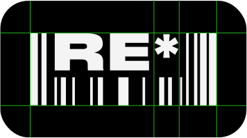

БРЕНДМы позиционируем себя как дружелюбное пространство, в котором каждый сможет начать осознанное потребление с нуля.
Наш бренд стремится быть максимально простым и понятным. Именно поэтому
в основу фирменного стиля легла эстетика технических стикеров. МЫОсознанные, удобные, доступные, современные, семейные, экологичные, дружелюбные, открытые, образованные, спокойные, понимающие, идейные, информированные, рациональные, любознательные, комфортные, стильные, легкие, уважительные, активные. ЦЕННОСТИНам важны экологическая ситуация,
желания и моральное состояние наших
пользователей, а также вклад каждого,
даже самый маленький. МИССИЯНаша миссия — очистить от мусора
весь мир! ОХРАННОЕ ПОЛЕ 
ДОПОЛНИТЕЛЬНЫЙ ЦВЕТ И РАСПОЛОЖЕНИЕ
Логотип имеет один дополнительный вариант — черный
без фона. Все варианты логотипа черного цвета должны
располагаться в левом верхнем углу. Дополнительный
вариант всегда располагается сверху посередине. ЦВЕТАОсновными цветами являются черный и светло-серый. Это наиболее распространенные
цвета технических инструкций и стикеров. Дополнительные состоят из дружелюбных,
ярких цветов. Такая палитра позволяет сделать дизайн более современным. Основные цвета могут быть использованы, как для фона
и типографики, так и для графики. Дополнительные цвета
могут быть использованы только в 3D и в качестве фона
на некоторых носителях. ТИПОГРАФИКАМетафора для основного текста — из огромного количества информации
отобрать и выделить самую нужную и понятную. ЗаголовокПодзаголовокОсновной текст 1Основной текст 2 Druk Wide Super8.33% и 4.16% от ширины экранаАа Бб Вв Гг Дд Ее Ёё Жж Зз Ии Йй Кк Лл
Мм Нн Оо Пп Рр Сс Тт Уу Фф Хх Цц
Чч Шш Щщ Ъъ Ыы Ьь Ээ Юю Яя
0 1 2 3 4 5 6 7 8 9 Druk Wide Bold2.77% от ширины экранаАа Бб Вв Гг Дд Ее Ёё Жж Зз Ии Йй Кк Лл
Мм Нн Оо Пп Рр Сс Тт Уу Фф Хх Цц
Чч Шш Щщ Ъъ Ыы Ьь Ээ Юю Яя
0 1 2 3 4 5 6 7 8 9 Inter Medium2.77% и 2% от ширины экранаАа Бб Вв Гг Дд Ее Ёё Жж Зз Ии Йй Кк Лл Мм Нн Оо Пп
Рр Сс Тт Уу Фф Хх Цц Чч Шш Щщ Ъъ Ыы Ьь Ээ Юю Яя
0 1 2 3 4 5 6 7 8 9 Inter Regular2.77% и 2% от ширины экранаАа Бб Вв Гг Дд Ее Ёё Жж Зз Ии Йй Кк Лл Мм Нн Оо Пп Рр Сс
Тт Уу Фф Хх Цц Чч Шш Щщ Ъъ Ыы Ьь Ээ Юю Яя
0 1 2 3 4 5 6 7 8 9 КОМПОЗИЦИЯПрактически все композиции следует выстраивать «слипшимися»,
однако, стоит помнить о «воздухе» и гармонии и не забывать оставлять
пустое пространство. ГОРИЗОНТАЛЬНАЯ СЕТКАДРУГИЕ ФОРМАТЫ
ВОЗМОЖНЫЕ КОМПОЗИЦИИ С ЛОГОТИПОМ
Если логотип на черном фоне и стоит в левом верхнем углу, то заголовок
начинается на той же строчке. Если логотип не имеет фона и стоит сверху
посередине, то заголовок следует расположить под логотипом. ГРАФИКАВ качестве фирменной графики можно
использовать все знаки маркировки,
а также 3D объекты высокого качества
в ярких, современных цветах. TONE OF VOICEПо-дружески обращается «на ты».